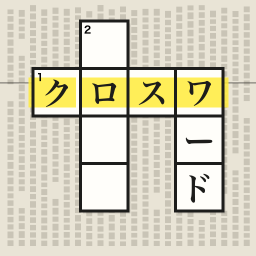

自分の言葉で組むクロスワード
答えの言葉とカギを入れると、その場で盤ができる。家族の名前や思い出の言葉で、うちだけのクロスワードを。
新聞の日曜版のパズル欄のような紙面で、カタカナで答えるクロスワードを解きます。入っている問題を解くほかに、自分で言葉とカギを入れて盤を組めます。
- 言葉とカギを入れると、盤を組む。答えの言葉（ひらがな・カタカナ 2〜10字）とカギ（問題の文）を2〜20組入れて「盤を組む」を押すと、交わる所ができるだけ多くなるように何通りも試して並べます。「組み直す」でちがう並びに。入らなかった言葉は知らせます
- 作った盤は何度でも解けて、印刷もできる。問題と答えの2枚の PDF にして、印刷・ファイルに保存・送ることができます。授業やお楽しみ会、家族への出題にも
- 入っている問題は120問。やさしい・ふつう・むずかしい が40問ずつ。ふだんのくらしの言葉だけで作りました。どの問題からでも始められます
- 言葉の手帳。解けた言葉が、漢字などの書き方とカギつきでたまります
- 全部のマスが合ったら、ボタンを押さなくてもその場でクリア。ヒント（1マスあける）と答え合わせは何回でも使えます（広告は出ません）
- 登録・課金はありません。ネットにつながっていなくても遊べます。入れた言葉・記録はこの端末の中だけに保存します。画面のいちばん下に小さな広告が出ます（画面いっぱいの広告・動画の広告は出しません）